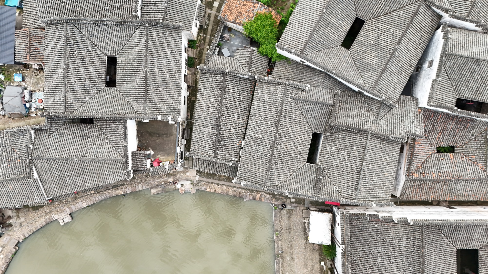
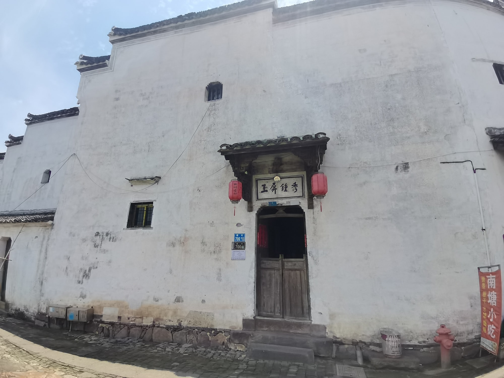

国保传统民居
小院之内，自有章法是亦居
是亦居是全国重点文物保护单位“新叶村乡土建筑”中的一座三合院式民居。两侧厢房、中间天井与正堂共同围合出紧凑的起居空间，保留着新叶普通宅院因地制宜的布局特点。
01
厢房充当的门厅

新叶村的三合院多由两侧厢房、中间天井与正堂组成，大门常开在其中一侧的厢房位置。是亦居正是这样一处宅子——它没有单设门厅，而是让一间厢房兼作出入的门厅之用。这种因地制宜的做法，是村中普通人家在有限宅基上安排起居的实在智慧。

是亦居是全国重点文物保护单位“新叶村乡土建筑”中的一座三合院式民居。两侧厢房、中间天井与正堂共同围合出紧凑的起居空间，保留着新叶普通宅院因地制宜的布局特点。

新叶村的三合院多由两侧厢房、中间天井与正堂组成，大门常开在其中一侧的厢房位置。是亦居正是这样一处宅子——它没有单设门厅，而是让一间厢房兼作出入的门厅之用。这种因地制宜的做法，是村中普通人家在有限宅基上安排起居的实在智慧。